Week 1
Expectations / Level Setting
🚀 Getting Started with R for Data Science
- Welcome to 523C: Environmental Data Science Applications: Water Resources!
- This first lecture will introduce essential, high-level topics to help you build a strong foundation in R for environmental data science.
- Throughout the lecture, you will be asked to assess your comfort level with various topics via a Google survey.
- The survey results will help tailor the course focus, ensuring that we reinforce challenging concepts while avoiding unnecessary review of familiar topics.
Google Survey
- Please open this survey and answer the questions as we work through this lecture.
- Your responses will provide valuable insights into areas where additional explanations or hands-on exercises may be beneficial.
~ Week 1: Data Science Basics
Data Types
R has five principal data types (excluding raw and complex):
- Character: A string of text, represented with quotes (e.g., “hello”).
- Used to store words, phrases, and categorical data.
- Integer: A whole number, explicitly defined with an
Lsuffix (e.g.,42L).- Stored more efficiently than numeric values when decimals are not needed.
- Numeric: A floating-point number, used for decimal values (e.g.,
3.1415).- This is the default type for numbers in R.
- Boolean (Logical): A logical value that represents
TRUEorFALSE.- Commonly used in logical operations and conditional statements.
character <- "a"
integer <- 1L
numeric <- 3.3
boolean <- TRUEData Structures
- When working with multiple values, we need data structures to store and manipulate data efficiently.
- R provides several types of data structures, each suited for different use cases.
Vector
- A vector is the most basic data structure in R and contains elements of the same type.
- Vectors are created using the
c()function.
char.vec <- c("a", "b", "c")
boolean.vec <- c(TRUE, FALSE, TRUE)- Lists allow for heterogeneous data types.
list <- list(a = c(1,2,3),
b = c(TRUE, FALSE),
c = "test")Matrix
# Creating a sequence of numbers:
(vec <- 1:9)
#> [1] 1 2 3 4 5 6 7 8 9- A matrix is a two-dimensional data structure where a diminision (dim) is added to an atomic vector
- Matrices are created using the
matrix()function.
# Default column-wise filling
matrix(vec, nrow = 3)
#> [,1] [,2] [,3]
#> [1,] 1 4 7
#> [2,] 2 5 8
#> [3,] 3 6 9
# Row-wise filling
matrix(vec, nrow = 3, byrow = TRUE)
#> [,1] [,2] [,3]
#> [1,] 1 2 3
#> [2,] 4 5 6
#> [3,] 7 8 9Array
- An array extends matrices to higher dimensions.
- It is useful when working with multi-dimensional data.
# Creating a 2x2x2 array
array(vec, dim = c(2,2,2))
#> , , 1
#>
#> [,1] [,2]
#> [1,] 1 3
#> [2,] 2 4
#>
#> , , 2
#>
#> [,1] [,2]
#> [1,] 5 7
#> [2,] 6 8Data Frame / Tibble
- Data Frames: A table-like (rectangular) structure where each column is a vector of equal length.
- Used for storing datasets where different columns can have different data types.
- Tibble: A modern version of a data frame that supports list-columns and better printing.
- Offers improved performance and formatting for large datasets.
(df <- data.frame(char.vec, boolean.vec))
#> char.vec boolean.vec
#> 1 a TRUE
#> 2 b FALSE
#> 3 c TRUE
(tib <- tibble::tibble(char.vec, list))
#> # A tibble: 3 × 2
#> char.vec list
#> <chr> <named list>
#> 1 a <dbl [3]>
#> 2 b <lgl [2]>
#> 3 c <chr [1]>📦 Installing Packages
- R has a vast ecosystem of packages that extend its capabilities both on CRAN and github
- To install a package from CRAN, use
install.packages(). - To install a package from Github, use
remotes::install_github()`. - We’ll start by installing
palmerpenguins, which contains a dataset on penguins.
install.packages('palmerpenguins')Attaching/Loading Packages
- To use an installed package, you need to load it in your current working session using
library(). - Here, we load
palmerpenguinsfor dataset exploration andtidyversefor data science workflows.
library(palmerpenguins) # 🐧 Fun dataset about penguins!
library(tidyverse) # 🛠 Essential for data science in RHelp & Documentation
- R has built-in documentation that provides information about functions and datasets.
- To access documentation, use
?function_name. - Example: Viewing the help page for the
penguinsdataset.
?penguins- You can also use
help.search("keyword")to look up topics of interest. - For vignettes (detailed guides), use
vignette("package_name").
Quarto: Communication
- In this class we will use Quarto, a more modern, cross langauge version of Rmarkdown
- If you are comfortable with Rmd, you’ll quickly be able to transition to Qmd
- If you are new to Rmd, you’ll be able to learn the latest and greatest
🌟 Tidyverse: A Swiss Army Knife for Data Science R 
The
tidyverseis a collection of packages designed for data science.We can see what it includes using the
tidyverse_packagesfunction:
tidyverse_packages()
#> [1] "broom" "conflicted" "cli" "dbplyr"
#> [5] "dplyr" "dtplyr" "forcats" "ggplot2"
#> [9] "googledrive" "googlesheets4" "haven" "hms"
#> [13] "httr" "jsonlite" "lubridate" "magrittr"
#> [17] "modelr" "pillar" "purrr" "ragg"
#> [21] "readr" "readxl" "reprex" "rlang"
#> [25] "rstudioapi" "rvest" "stringr" "tibble"
#> [29] "tidyr" "xml2" "tidyverse"While all tidyverse packages are valuable, the main ones we will focus on are:
readr: Reading datatibble: Enhanced data framesdplyr: Data manipulationtidyr: Data reshapingpurrr: Functional programmingggplot2: Visualization
Combined, this provides us a complete “data science” toolset:

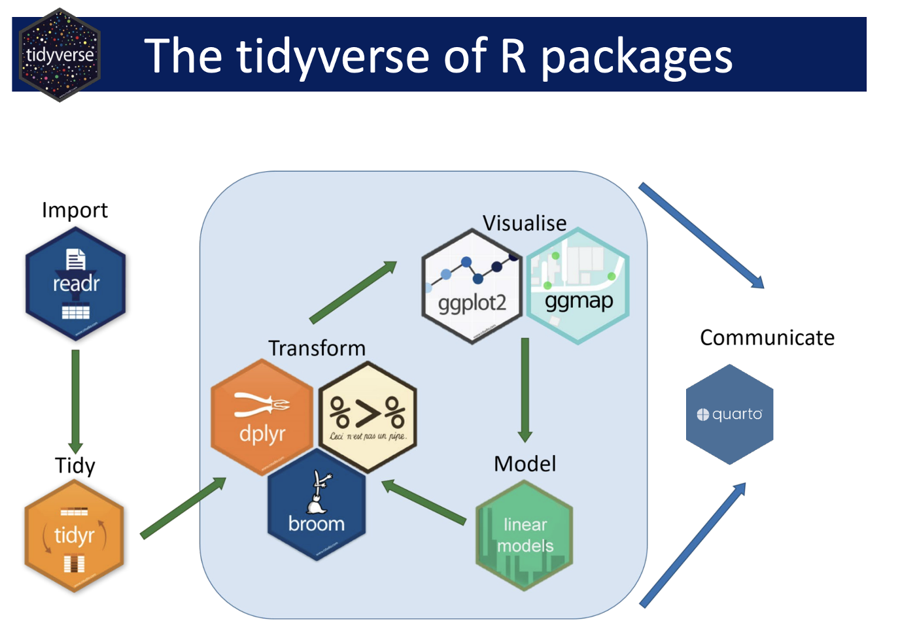
readr 
- The
readrpackage provides functions for reading data into R. - The
read_csv()function reads comma-separated files. - The
read_tsv()function reads tab-separated files. - The
read_delim()function reads files with custom delimiters. - In all cases, more intellegent parsing is done than with base R equivalents.
read_csv
path = 'https://raw.githubusercontent.com/mikejohnson51/csu-ess-330/refs/heads/main/resources/county-centroids.csv'
# base R
read.csv(path) |>
head()
#> fips LON LAT
#> 1 1061 -85.83575 31.09404
#> 2 8125 -102.42587 40.00307
#> 3 17177 -89.66239 42.35138
#> 4 28153 -88.69577 31.64132
#> 5 34041 -74.99570 40.85940
#> 6 46051 -96.76981 45.17255
# More inutitive readr
read_csv(path) |>
head()
#> # A tibble: 6 × 3
#> fips LON LAT
#> <chr> <dbl> <dbl>
#> 1 01061 -85.8 31.1
#> 2 08125 -102. 40.0
#> 3 17177 -89.7 42.4
#> 4 28153 -88.7 31.6
#> 5 34041 -75.0 40.9
#> 6 46051 -96.8 45.2dplyr 
- The
dplyrpackage provides functions for data manipulation throuhg ‘a grammar for data manipulation’. - It provides capabilities similar to SQL for data manipulation.
- It includes functions for viewing, filtering, selecting, mutating, summarizing, and joining data.
%>% / |>
- The pipe operator
%>%is used to chain operations in R. - The pipe operator
|>is a base R version of%>%introduced in R 4.1. - The pipe passes what on the “left hand” side to the function on the “right hand” side as the first argument.
penguins |>
glimpse()
#> Rows: 344
#> Columns: 8
#> $ species <fct> Adelie, Adelie, Adelie, Adelie, Adelie, Adelie, Adel…
#> $ island <fct> Torgersen, Torgersen, Torgersen, Torgersen, Torgerse…
#> $ bill_length_mm <dbl> 39.1, 39.5, 40.3, NA, 36.7, 39.3, 38.9, 39.2, 34.1, …
#> $ bill_depth_mm <dbl> 18.7, 17.4, 18.0, NA, 19.3, 20.6, 17.8, 19.6, 18.1, …
#> $ flipper_length_mm <int> 181, 186, 195, NA, 193, 190, 181, 195, 193, 190, 186…
#> $ body_mass_g <int> 3750, 3800, 3250, NA, 3450, 3650, 3625, 4675, 3475, …
#> $ sex <fct> male, female, female, NA, female, male, female, male…
#> $ year <int> 2007, 2007, 2007, 2007, 2007, 2007, 2007, 2007, 2007…glimpse
- The
glimpse()function provides a concise summary of a dataset.
glimpse(penguins)
#> Rows: 344
#> Columns: 8
#> $ species <fct> Adelie, Adelie, Adelie, Adelie, Adelie, Adelie, Adel…
#> $ island <fct> Torgersen, Torgersen, Torgersen, Torgersen, Torgerse…
#> $ bill_length_mm <dbl> 39.1, 39.5, 40.3, NA, 36.7, 39.3, 38.9, 39.2, 34.1, …
#> $ bill_depth_mm <dbl> 18.7, 17.4, 18.0, NA, 19.3, 20.6, 17.8, 19.6, 18.1, …
#> $ flipper_length_mm <int> 181, 186, 195, NA, 193, 190, 181, 195, 193, 190, 186…
#> $ body_mass_g <int> 3750, 3800, 3250, NA, 3450, 3650, 3625, 4675, 3475, …
#> $ sex <fct> male, female, female, NA, female, male, female, male…
#> $ year <int> 2007, 2007, 2007, 2007, 2007, 2007, 2007, 2007, 2007…select
- The
select()function is used to select columns from a dataset. - It is useful when you want to work with specific columns.
- Example: Selecting the
speciescolumn from thepenguinsdataset.
select(penguins, species)
#> # A tibble: 344 × 1
#> species
#> <fct>
#> 1 Adelie
#> 2 Adelie
#> 3 Adelie
#> 4 Adelie
#> 5 Adelie
#> 6 Adelie
#> 7 Adelie
#> 8 Adelie
#> 9 Adelie
#> 10 Adelie
#> # ℹ 334 more rowsfilter
- The
filter()function is used to filter rows based on a condition. - It is useful when you want to work with specific rows.
- Example: Filtering the
penguinsdataset to include only Adelie penguins.
filter(penguins, species == "Adelie")
#> # A tibble: 152 × 8
#> species island bill_length_mm bill_depth_mm flipper_length_mm body_mass_g
#> <fct> <fct> <dbl> <dbl> <int> <int>
#> 1 Adelie Torgersen 39.1 18.7 181 3750
#> 2 Adelie Torgersen 39.5 17.4 186 3800
#> 3 Adelie Torgersen 40.3 18 195 3250
#> 4 Adelie Torgersen NA NA NA NA
#> 5 Adelie Torgersen 36.7 19.3 193 3450
#> 6 Adelie Torgersen 39.3 20.6 190 3650
#> 7 Adelie Torgersen 38.9 17.8 181 3625
#> 8 Adelie Torgersen 39.2 19.6 195 4675
#> 9 Adelie Torgersen 34.1 18.1 193 3475
#> 10 Adelie Torgersen 42 20.2 190 4250
#> # ℹ 142 more rows
#> # ℹ 2 more variables: sex <fct>, year <int>mutate
- The
mutate()function is used to create new columns or modify existing ones. - It is useful when you want to add new information to your dataset.
- Example: Creating a new column
bill_length_cmfrombill_length_mm.
Note the use of the tidy_select helper starts_with
mutate(penguins, bill_length_cm = bill_length_mm / 100) |>
select(starts_with("bill"))
#> # A tibble: 344 × 3
#> bill_length_mm bill_depth_mm bill_length_cm
#> <dbl> <dbl> <dbl>
#> 1 39.1 18.7 0.391
#> 2 39.5 17.4 0.395
#> 3 40.3 18 0.403
#> 4 NA NA NA
#> 5 36.7 19.3 0.367
#> 6 39.3 20.6 0.393
#> 7 38.9 17.8 0.389
#> 8 39.2 19.6 0.392
#> 9 34.1 18.1 0.341
#> 10 42 20.2 0.42
#> # ℹ 334 more rowssummarize
- The
summarize()function is used to aggregate data. - It is useful when you want to calculate summary statistics.
- It always produces a one-row output.
- Example: Calculating the mean
bill_length_mmfor all penguins
summarize(penguins, bill_length_mm = mean(bill_length_mm, na.rm = TRUE))
#> # A tibble: 1 × 1
#> bill_length_mm
#> <dbl>
#> 1 43.9group_by / ungroup
- The
group_by()function is used to group data by one or more columns. - It is useful when you want to perform operations on groups.
- It does this by adding a
grouped_dfclass to the dataset. - The
ungroup()function removes grouping from a dataset.
groups <- group_by(penguins, species)
dplyr::group_keys(groups)
#> # A tibble: 3 × 1
#> species
#> <fct>
#> 1 Adelie
#> 2 Chinstrap
#> 3 Gentoo
dplyr::group_indices(groups)[1:5]
#> [1] 1 1 1 1 1Group operations
- Example: Grouping the
penguinsdataset byspeciesand calculating the meanbill_length_mm.
penguins |>
group_by(species) |>
summarize(bill_length_mm = mean(bill_length_mm, na.rm = TRUE)) |>
ungroup()
#> # A tibble: 3 × 2
#> species bill_length_mm
#> <fct> <dbl>
#> 1 Adelie 38.8
#> 2 Chinstrap 48.8
#> 3 Gentoo 47.5Joins
- The
dplyrpackage provides functions for joining datasets. - Common join functions include
inner_join(),left_join(),right_join(), andfull_join(). - Joins are used to combine datasets based on shared keys (primary and foreign).
Mutating joins
- Mutating joins add columns from one dataset to another based on a shared key.
- Example: Adding
speciesinformation to thepenguinsdataset based on thespecies_id.
species <- tribble(
~species_id, ~species,
1, "Adelie",
2, "Chinstrap",
3, "Gentoo"
)left_join
select(penguins, species, contains('bill')) |>
left_join(species, by = "species")
#> # A tibble: 344 × 4
#> species bill_length_mm bill_depth_mm species_id
#> <chr> <dbl> <dbl> <dbl>
#> 1 Adelie 39.1 18.7 1
#> 2 Adelie 39.5 17.4 1
#> 3 Adelie 40.3 18 1
#> 4 Adelie NA NA 1
#> 5 Adelie 36.7 19.3 1
#> 6 Adelie 39.3 20.6 1
#> 7 Adelie 38.9 17.8 1
#> 8 Adelie 39.2 19.6 1
#> 9 Adelie 34.1 18.1 1
#> 10 Adelie 42 20.2 1
#> # ℹ 334 more rowsright_join
select(penguins, species, contains('bill')) |>
right_join(species, by = "species")
#> # A tibble: 344 × 4
#> species bill_length_mm bill_depth_mm species_id
#> <chr> <dbl> <dbl> <dbl>
#> 1 Adelie 39.1 18.7 1
#> 2 Adelie 39.5 17.4 1
#> 3 Adelie 40.3 18 1
#> 4 Adelie NA NA 1
#> 5 Adelie 36.7 19.3 1
#> 6 Adelie 39.3 20.6 1
#> 7 Adelie 38.9 17.8 1
#> 8 Adelie 39.2 19.6 1
#> 9 Adelie 34.1 18.1 1
#> 10 Adelie 42 20.2 1
#> # ℹ 334 more rowsinner_join
select(penguins, species, contains('bill')) |>
right_join(species, by = "species")
#> # A tibble: 344 × 4
#> species bill_length_mm bill_depth_mm species_id
#> <chr> <dbl> <dbl> <dbl>
#> 1 Adelie 39.1 18.7 1
#> 2 Adelie 39.5 17.4 1
#> 3 Adelie 40.3 18 1
#> 4 Adelie NA NA 1
#> 5 Adelie 36.7 19.3 1
#> 6 Adelie 39.3 20.6 1
#> 7 Adelie 38.9 17.8 1
#> 8 Adelie 39.2 19.6 1
#> 9 Adelie 34.1 18.1 1
#> 10 Adelie 42 20.2 1
#> # ℹ 334 more rowsfull_join
select(penguins, species, contains('bill')) |>
right_join(species, by = "species")
#> # A tibble: 344 × 4
#> species bill_length_mm bill_depth_mm species_id
#> <chr> <dbl> <dbl> <dbl>
#> 1 Adelie 39.1 18.7 1
#> 2 Adelie 39.5 17.4 1
#> 3 Adelie 40.3 18 1
#> 4 Adelie NA NA 1
#> 5 Adelie 36.7 19.3 1
#> 6 Adelie 39.3 20.6 1
#> 7 Adelie 38.9 17.8 1
#> 8 Adelie 39.2 19.6 1
#> 9 Adelie 34.1 18.1 1
#> 10 Adelie 42 20.2 1
#> # ℹ 334 more rowsFiltering Joins
- Filtering joins retain only rows that match between datasets.
- Example: Filtering the
penguinsdataset to include only rows with matchingspecies_id.
select(penguins, species, contains('bill')) |>
semi_join(species, by = "species")
#> # A tibble: 344 × 3
#> species bill_length_mm bill_depth_mm
#> <fct> <dbl> <dbl>
#> 1 Adelie 39.1 18.7
#> 2 Adelie 39.5 17.4
#> 3 Adelie 40.3 18
#> 4 Adelie NA NA
#> 5 Adelie 36.7 19.3
#> 6 Adelie 39.3 20.6
#> 7 Adelie 38.9 17.8
#> 8 Adelie 39.2 19.6
#> 9 Adelie 34.1 18.1
#> 10 Adelie 42 20.2
#> # ℹ 334 more rowsggplot2: Visualization 
- The
ggplot2package is used for data visualization. - It is based on the “grammar of graphics”, which allows for a high level of customization.
ggplot2is built on the concept of layers, where each layer adds a different element to the plot.
ggplot
- The
ggplot()function initializes a plot. - It provides a blank canvas to which layers can be added.
ggplot()
data / aesthetics
- Data must be provided to
ggplot() - The
aes()function is used to map variables to aesthetics (e.g., x and y axes). - aes arguments provided in
ggplotare inherited by all layers. - Example: Creating a plot of
body_mass_gvs.bill_length_mm.
ggplot(penguins, aes(x = body_mass_g, y = bill_length_mm))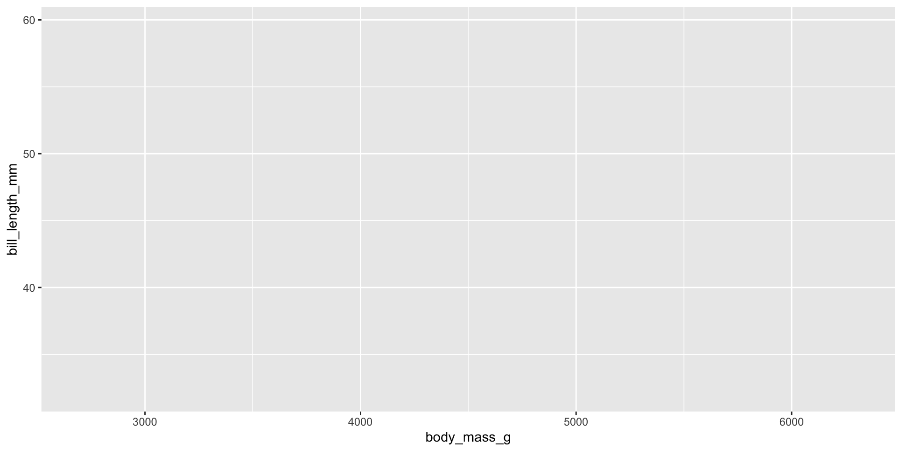
geom_*
- The
geom_*()functions add geometric objects to the plot. - They describe how to render the mapping created in
aes - Example: Adding points to the plot.
ggplot(penguins, aes(x = body_mass_g, y = bill_length_mm)) +
geom_point()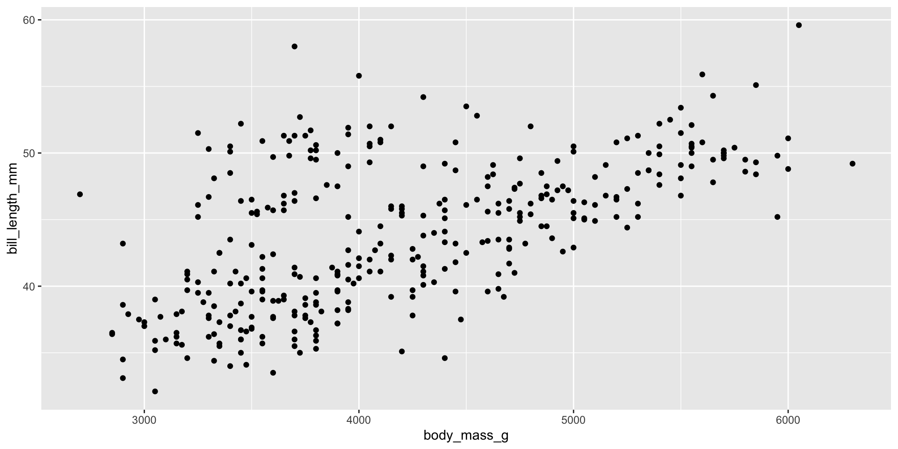
facet_wrap / facet_grid
- The
facet_wrap()function is used to create small multiples of a plot. - It is useful when you want to compare subsets of data.
- The
facet_grid()function is used to create a grid of plots. - Example: Faceting the plot by
species.
ggplot(penguins, aes(x = body_mass_g, y = bill_length_mm)) +
geom_point() +
facet_wrap(~species)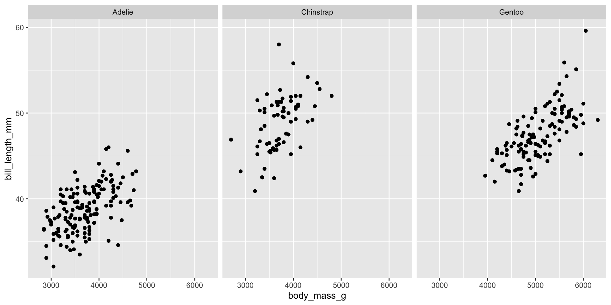
theme_*
- The
theme_*()functions are used to customize the appearance of the plot. - They allow you to modify the plot’s background, gridlines, and text.
- Example: Applying the
theme_linedraw()theme to the plot.
ggplot(penguins, aes(x = body_mass_g, y = bill_length_mm)) +
geom_point() +
facet_wrap(~species) +
theme_linedraw()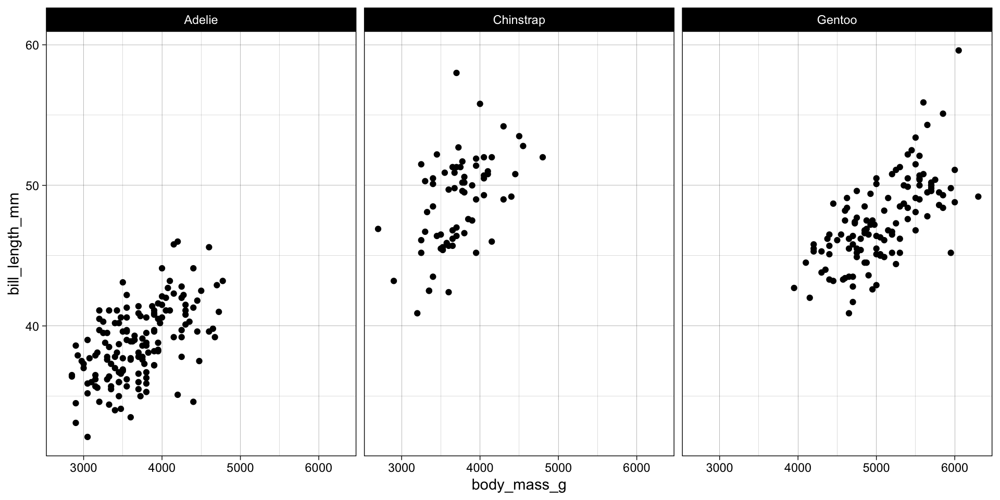
- There are 1000s of themes available in the
ggplot2ecosystemggthemesggpubrhrbrthemesggsci- …
ggplot(penguins, aes(x = body_mass_g, y = bill_length_mm)) +
geom_point() +
facet_wrap(~species) +
ggthemes::theme_economist()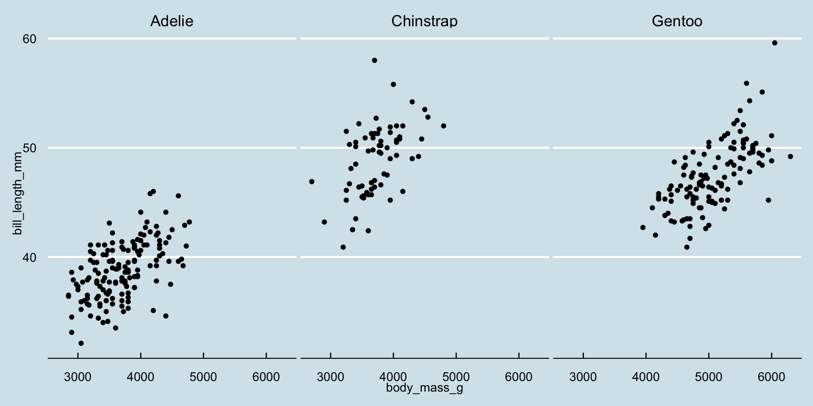
labs
- The
labs()function is used to add titles, subtitles, and axis labels to the plot. - It is useful for providing context and making the plot more informative.
- Example: Adding titles and axis labels to the plot.
ggplot(penguins, aes(x = body_mass_g, y = bill_length_mm)) +
geom_point() +
facet_wrap(~species) +
theme_linedraw() +
labs(title = "Penguins Weight by Bill Size",
x = "Body Mass",
y = "Bill Length",
subtitle = "Made for 523c")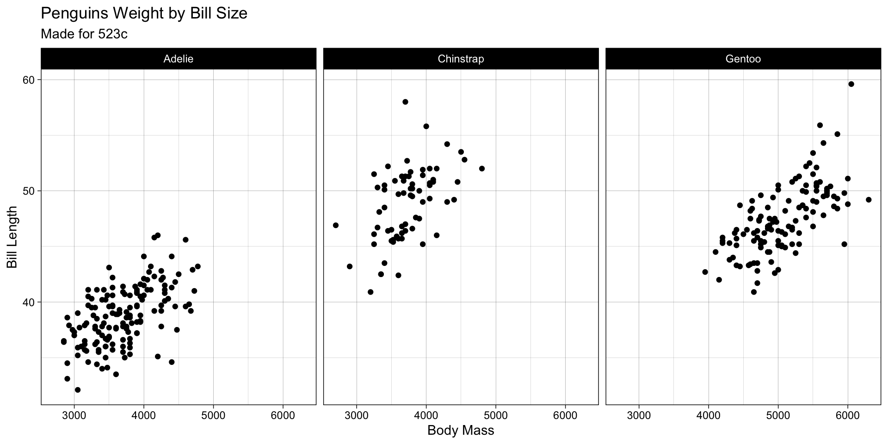
tidyr 
- The
tidyrpackage provides functions for data reshaping. - It includes functions for pivoting and nesting data.
pivot_longer
- The
pivot_longer()function is used to convert wide data to long data. - It is useful when you want to work with data in a tidy format.
- Example: Converting the
penguinsdataset from wide to long format.
(data.long = penguins |>
select(species, bill_length_mm, body_mass_g) |>
mutate(penguin_id = 1:n()) |>
pivot_longer(-c(penguin_id, species),
names_to = "Measure",
values_to = "value"))
#> # A tibble: 688 × 4
#> species penguin_id Measure value
#> <fct> <int> <chr> <dbl>
#> 1 Adelie 1 bill_length_mm 39.1
#> 2 Adelie 1 body_mass_g 3750
#> 3 Adelie 2 bill_length_mm 39.5
#> 4 Adelie 2 body_mass_g 3800
#> 5 Adelie 3 bill_length_mm 40.3
#> 6 Adelie 3 body_mass_g 3250
#> 7 Adelie 4 bill_length_mm NA
#> 8 Adelie 4 body_mass_g NA
#> 9 Adelie 5 bill_length_mm 36.7
#> 10 Adelie 5 body_mass_g 3450
#> # ℹ 678 more rowspivot_wider
- The
pivot_wider()function is used to convert long data to wide data. - It is useful when you want to work with data in a wide format.
- Example: Converting the
data.longdataset from long to wide format.
data.long |>
pivot_wider(names_from = "Measure",
values_from = "value")
#> # A tibble: 344 × 4
#> species penguin_id bill_length_mm body_mass_g
#> <fct> <int> <dbl> <dbl>
#> 1 Adelie 1 39.1 3750
#> 2 Adelie 2 39.5 3800
#> 3 Adelie 3 40.3 3250
#> 4 Adelie 4 NA NA
#> 5 Adelie 5 36.7 3450
#> 6 Adelie 6 39.3 3650
#> 7 Adelie 7 38.9 3625
#> 8 Adelie 8 39.2 4675
#> 9 Adelie 9 34.1 3475
#> 10 Adelie 10 42 4250
#> # ℹ 334 more rowsnest / unnest
- The
nest()function is used to nest data into a list-column. - It is useful when you want to group data together.
- Example: Nesting the
penguinsdataset byspecies.
penguins |>
nest(data = -species)
#> # A tibble: 3 × 2
#> species data
#> <fct> <list>
#> 1 Adelie <tibble [152 × 7]>
#> 2 Gentoo <tibble [124 × 7]>
#> 3 Chinstrap <tibble [68 × 7]>
penguins |>
nest(data = -species) |>
unnest(data)
#> # A tibble: 344 × 8
#> species island bill_length_mm bill_depth_mm flipper_length_mm body_mass_g
#> <fct> <fct> <dbl> <dbl> <int> <int>
#> 1 Adelie Torgersen 39.1 18.7 181 3750
#> 2 Adelie Torgersen 39.5 17.4 186 3800
#> 3 Adelie Torgersen 40.3 18 195 3250
#> 4 Adelie Torgersen NA NA NA NA
#> 5 Adelie Torgersen 36.7 19.3 193 3450
#> 6 Adelie Torgersen 39.3 20.6 190 3650
#> 7 Adelie Torgersen 38.9 17.8 181 3625
#> 8 Adelie Torgersen 39.2 19.6 195 4675
#> 9 Adelie Torgersen 34.1 18.1 193 3475
#> 10 Adelie Torgersen 42 20.2 190 4250
#> # ℹ 334 more rows
#> # ℹ 2 more variables: sex <fct>, year <int>linear modeling: lm
- The
lm()function is used to fit linear models. - It is useful when you want to model the relationship between two variables.
- Example: Fitting a linear model to predict
body_mass_gfromflipper_length_mm.
model <- lm(body_mass_g ~ flipper_length_mm, data = drop_na(penguins))
summary(model)
#>
#> Call:
#> lm(formula = body_mass_g ~ flipper_length_mm, data = drop_na(penguins))
#>
#> Residuals:
#> Min 1Q Median 3Q Max
#> -1057.33 -259.79 -12.24 242.97 1293.89
#>
#> Coefficients:
#> Estimate Std. Error t value Pr(>|t|)
#> (Intercept) -5872.09 310.29 -18.93 <2e-16 ***
#> flipper_length_mm 50.15 1.54 32.56 <2e-16 ***
#> ---
#> Signif. codes: 0 '***' 0.001 '**' 0.01 '*' 0.05 '.' 0.1 ' ' 1
#>
#> Residual standard error: 393.3 on 331 degrees of freedom
#> Multiple R-squared: 0.7621, Adjusted R-squared: 0.7614
#> F-statistic: 1060 on 1 and 331 DF, p-value: < 2.2e-16broom 
- The
broompackage is used to tidy model outputs. - It provides functions to convert model outputs into tidy data frames.
- Example: Tidying the
modeloutput.
tidy
- The
tidy()function is used to tidy model coefficients. - It is useful when you want to extract model coefficients.
- Example: Tidying the
modeloutput.
tidy(model)
#> # A tibble: 2 × 5
#> term estimate std.error statistic p.value
#> <chr> <dbl> <dbl> <dbl> <dbl>
#> 1 (Intercept) -5872. 310. -18.9 1.18e- 54
#> 2 flipper_length_mm 50.2 1.54 32.6 3.13e-105glance
- The
glance()function is used to provide a summary of model fit. - It is useful when you want to assess model performance.
- Example: Glancing at the
modeloutput.
glance(model)
#> # A tibble: 1 × 12
#> r.squared adj.r.squared sigma statistic p.value df logLik AIC BIC
#> <dbl> <dbl> <dbl> <dbl> <dbl> <dbl> <dbl> <dbl> <dbl>
#> 1 0.762 0.761 393. 1060. 3.13e-105 1 -2461. 4928. 4940.
#> # ℹ 3 more variables: deviance <dbl>, df.residual <int>, nobs <int>augment
- The
augment()function is used to add model predictions and residuals to the dataset. - It is useful when you want to visualize model performance.
- Example: Augmenting the
modeloutput.
a <- augment(model)
ggplot(a, aes(x = .fitted, y = body_mass_g)) +
geom_point() +
geom_smooth(method = "lm")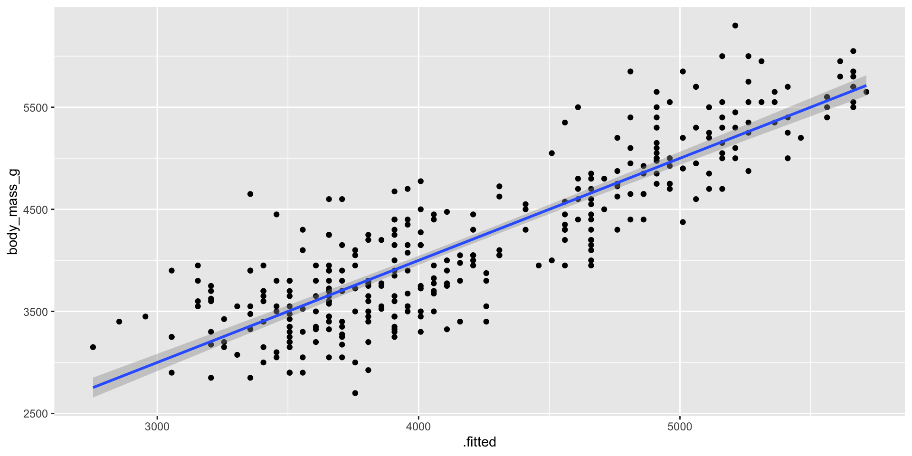
ggplot(a, aes(x = .resid)) +
geom_histogram() 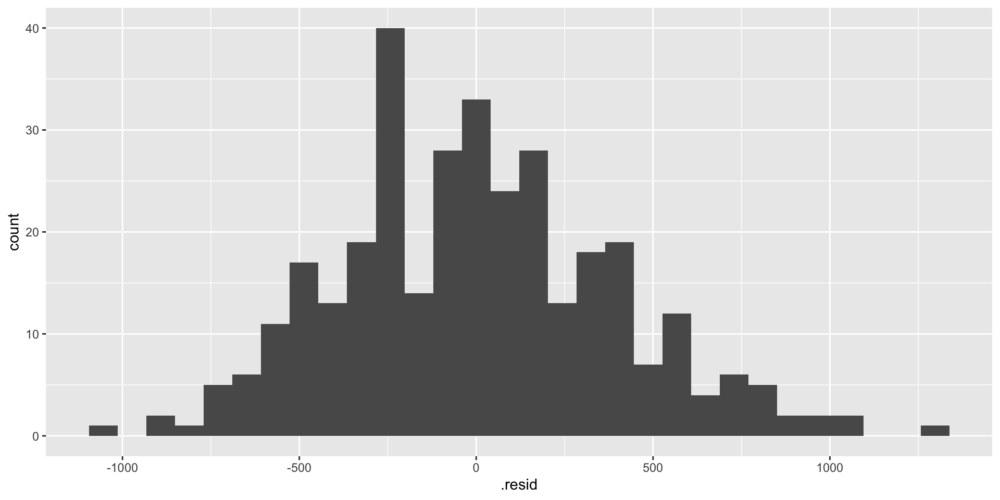
purrr 
- The
purrrpackage is used for functional programming. - It provides functions for working with lists and vectors.
map
- The
map()function is used to apply a function to each element of a list. - It is useful when you want to iterate over a list.
- Example: Fitting a linear model to each species in the
penguinsdataset.
penguins |>
nest(data = -species) |>
mutate(lm = map(data, ~lm(body_mass_g ~ flipper_length_mm, data = .x)))
#> # A tibble: 3 × 3
#> species data lm
#> <fct> <list> <list>
#> 1 Adelie <tibble [152 × 7]> <lm>
#> 2 Gentoo <tibble [124 × 7]> <lm>
#> 3 Chinstrap <tibble [68 × 7]> <lm>map_*
- The
map_*()functions are used to extract specific outputs from a list. - They are useful when you want to extract specific outputs from a list.
- Example: Extracting the R-squared values (doubles) from the linear models.
penguins |>
nest(data = -species) |>
mutate(lm = map(data, ~lm(body_mass_g ~ flipper_length_mm, data = .x)),
r2 = map_dbl(lm, ~summary(.x)$r.squared))
#> # A tibble: 3 × 4
#> species data lm r2
#> <fct> <list> <list> <dbl>
#> 1 Adelie <tibble [152 × 7]> <lm> 0.219
#> 2 Gentoo <tibble [124 × 7]> <lm> 0.494
#> 3 Chinstrap <tibble [68 × 7]> <lm> 0.412map2
- The
map2()function is used to iterate over two lists in parallel. - It is useful when you want to apply a function to two lists simultaneously.
- Example: Augmenting the linear models with the original data.
penguins |>
drop_na() |>
nest(data = -species) |>
mutate(lm_mod = map(data, ~lm(body_mass_g ~ flipper_length_mm, data = .x)),
r2 = map_dbl(lm_mod, ~summary(.x)$r.squared),
a = map2(lm_mod, data, ~broom::augment(.x, .y)))
#> # A tibble: 3 × 5
#> species data lm_mod r2 a
#> <fct> <list> <list> <dbl> <list>
#> 1 Adelie <tibble [146 × 7]> <lm> 0.216 <tibble [146 × 13]>
#> 2 Gentoo <tibble [119 × 7]> <lm> 0.506 <tibble [119 × 13]>
#> 3 Chinstrap <tibble [68 × 7]> <lm> 0.412 <tibble [68 × 13]>~ Week 2-3: Spatial Data (Vector)
sf 
- The
sfpackage is used for working with spatial data. - sf binds to common spatial libraries like GDAL, GEOS, and PROJ.
- It provides functions for reading, writing, and manipulating spatial data.
library(sf)
sf::sf_extSoftVersion()
#> GEOS GDAL proj.4 GDAL_with_GEOS USE_PROJ_H
#> "3.11.0" "3.5.3" "9.1.0" "true" "true"
#> PROJ
#> "9.1.0"I/O
- The
st_read()function is used to read spatial data. - It is useful when you want to import spatial data into R for local or remote files.
- Example: Reading a Major Global Rivers.
From package
# via packages
(counties <- AOI::aoi_get(state = "conus", county = "all"))
#> Simple feature collection with 3108 features and 14 fields
#> Geometry type: MULTIPOLYGON
#> Dimension: XY
#> Bounding box: xmin: -124.8485 ymin: 24.39631 xmax: -66.88544 ymax: 49.38448
#> Geodetic CRS: WGS 84
#> First 10 features:
#> state_region state_division feature_code state_name state_abbr name
#> 1 3 6 0161526 Alabama AL Autauga
#> 2 3 6 0161527 Alabama AL Baldwin
#> 3 3 6 0161528 Alabama AL Barbour
#> 4 3 6 0161529 Alabama AL Bibb
#> 5 3 6 0161530 Alabama AL Blount
#> 6 3 6 0161531 Alabama AL Bullock
#> 7 3 6 0161532 Alabama AL Butler
#> 8 3 6 0161533 Alabama AL Calhoun
#> 9 3 6 0161534 Alabama AL Chambers
#> 10 3 6 0161535 Alabama AL Cherokee
#> fip_class tiger_class combined_area_code metropolitan_area_code
#> 1 H1 G4020 388 <NA>
#> 2 H1 G4020 380 <NA>
#> 3 H1 G4020 NA <NA>
#> 4 H1 G4020 142 <NA>
#> 5 H1 G4020 142 <NA>
#> 6 H1 G4020 NA <NA>
#> 7 H1 G4020 NA <NA>
#> 8 H1 G4020 NA <NA>
#> 9 H1 G4020 122 <NA>
#> 10 H1 G4020 NA <NA>
#> functional_status land_area water_area fip_code
#> 1 A 1539634184 25674812 01001
#> 2 A 4117656514 1132955729 01003
#> 3 A 2292160149 50523213 01005
#> 4 A 1612188717 9572303 01007
#> 5 A 1670259090 14860281 01009
#> 6 A 1613083467 6030667 01011
#> 7 A 2012002546 2701199 01013
#> 8 A 1569246126 16536293 01015
#> 9 A 1545085601 16971700 01017
#> 10 A 1433620850 120310807 01019
#> geometry
#> 1 MULTIPOLYGON (((-86.81491 3...
#> 2 MULTIPOLYGON (((-87.59883 3...
#> 3 MULTIPOLYGON (((-85.41644 3...
#> 4 MULTIPOLYGON (((-87.01916 3...
#> 5 MULTIPOLYGON (((-86.5778 33...
#> 6 MULTIPOLYGON (((-85.65767 3...
#> 7 MULTIPOLYGON (((-86.4482 31...
#> 8 MULTIPOLYGON (((-85.79605 3...
#> 9 MULTIPOLYGON (((-85.59315 3...
#> 10 MULTIPOLYGON (((-85.51361 3...From file
(rivers <- sf::read_sf('data/majorrivers_0_0/MajorRivers.shp'))
#> Simple feature collection with 98 features and 4 fields
#> Geometry type: MULTILINESTRING
#> Dimension: XY
#> Bounding box: xmin: -164.8874 ymin: -36.96945 xmax: 160.7636 ymax: 71.39249
#> Geodetic CRS: WGS 84
#> # A tibble: 98 × 5
#> NAME SYSTEM MILES KILOMETERS geometry
#> <chr> <chr> <dbl> <dbl> <MULTILINESTRING [°]>
#> 1 Kolyma <NA> 2552. 4106. ((144.8419 61.75915, 144.8258 61.8036,…
#> 2 Parana Parana 1616. 2601. ((-51.0064 -20.07941, -51.02972 -20.22…
#> 3 San Francisco <NA> 1494. 2404. ((-46.43639 -20.25807, -46.49835 -20.2…
#> 4 Japura Amazon 1223. 1968. ((-76.71056 1.624166, -76.70029 1.6883…
#> 5 Putumayo Amazon 890. 1432. ((-76.86806 1.300553, -76.86695 1.295,…
#> 6 Rio Maranon Amazon 889. 1431. ((-73.5079 -4.459834, -73.79197 -4.621…
#> 7 Ucayali Amazon 1298. 2089. ((-73.5079 -4.459834, -73.51585 -4.506…
#> 8 Guapore Amazon 394. 634. ((-65.39585 -10.39333, -65.39578 -10.3…
#> 9 Madre de Dios Amazon 568. 914. ((-65.39585 -10.39333, -65.45279 -10.4…
#> 10 Amazon Amazon 1890. 3042. ((-73.5079 -4.459834, -73.45141 -4.427…
#> # ℹ 88 more rowsvia url
# via url
(gage <- sf::read_sf("https://reference.geoconnex.us/collections/gages/items/1000001"))
#> Simple feature collection with 1 feature and 17 fields
#> Geometry type: POINT
#> Dimension: XY
#> Bounding box: xmin: -107.2826 ymin: 35.94568 xmax: -107.2826 ymax: 35.94568
#> Geodetic CRS: WGS 84
#> # A tibble: 1 × 18
#> nhdpv2_reachcode mainstem_uri fid nhdpv2_reach_measure cluster uri
#> <chr> <chr> <int> <dbl> <chr> <chr>
#> 1 13020205000216 https://geoconnex.u… 1 80.3 https:… http…
#> # ℹ 12 more variables: nhdpv2_comid <dbl>, name <chr>, nhdpv2_totdasqkm <dbl>,
#> # description <chr>, nhdpv2_link_source <chr>, subjectof <chr>,
#> # nhdpv2_offset_m <dbl>, provider <chr>, gage_totdasqkm <dbl>,
#> # provider_id <chr>, dasqkm_diff <dbl>, geometry <POINT [°]>
# write out data
# write_sf(counties, "data/counties.shp")Geometry list columns
- The
geometrycolumn contains the spatial information. - It is stored as a list-column of
sfcobjects. - Example: Accessing the first geometry in the
riversdataset.
rivers$geometry[1]
#> Geometry set for 1 feature
#> Geometry type: MULTILINESTRING
#> Dimension: XY
#> Bounding box: xmin: 144.8258 ymin: 61.40833 xmax: 160.7636 ymax: 68.8008
#> Geodetic CRS: WGS 84Projections
- CRS (Coordinate Reference System) is used to define the spatial reference.
- The
st_crs()function is used to get the CRS of a dataset. - The
st_transform()function is used to transform the CRS of a dataset. - Example: Transforming the
riversdataset to EPSG:5070.
st_crs(rivers) |> sf::st_is_longlat()
#> [1] TRUE
st_crs(rivers)$units
#> NULL
riv_5070 <- st_transform(rivers, 5070)
st_crs(riv_5070) |> sf::st_is_longlat()
#> [1] FALSE
st_crs(riv_5070)$units
#> [1] "m"Data Manipulation
- All dplyr verbs work with
sfobjects. - Example: Filtering the
riversdataset to include only the Mississippi River.
mississippi <- filter(rivers, SYSTEM == "Mississippi")
larimer <- filter(counties, name == "Larimer")Unions / Combines
- The
st_union()function is used to combine geometries. - It is useful when you want to merge geometries.
mississippi
#> Simple feature collection with 4 features and 4 fields
#> Geometry type: MULTILINESTRING
#> Dimension: XY
#> Bounding box: xmin: -112 ymin: 28.92983 xmax: -77.86168 ymax: 48.16158
#> Geodetic CRS: WGS 84
#> # A tibble: 4 × 5
#> NAME SYSTEM MILES KILOMETERS geometry
#> * <chr> <chr> <dbl> <dbl> <MULTILINESTRING [°]>
#> 1 Arkansas Mississippi 1446. 2327. ((-106.3789 39.36165, -106.3295 39.3…
#> 2 Mississippi Mississippi 2385. 3838. ((-95.02364 47.15609, -94.98973 47.3…
#> 3 Missouri Mississippi 2739. 4408. ((-110.5545 44.76081, -110.6122 44.7…
#> 4 Ohio Mississippi 1368. 2202. ((-89.12166 36.97756, -89.17502 37.0…
st_union(mississippi)
#> Geometry set for 1 feature
#> Geometry type: MULTILINESTRING
#> Dimension: XY
#> Bounding box: xmin: -112 ymin: 28.92983 xmax: -77.86168 ymax: 48.16158
#> Geodetic CRS: WGS 84Measures
- The
st_length()function is used to calculate the length of a geometry. - The
st_area()function is used to calculate the area of a geometry. - The
st_distance()function is used to calculate the distance between two geometries. - Example: Calculating the length of the Mississippi River and the area of Larimer County.
st_length(mississippi)
#> Units: [m]
#> [1] 1912869 3147943 3331900 1785519
st_area(larimer)
#> 6813621254 [m^2]
st_distance(larimer, mississippi)
#> Units: [m]
#> [,1] [,2] [,3] [,4]
#> [1,] 116016.6 1009375 526454 1413983Predicates
- Spatial predicates are used to check relationships between geometries using the DE-9IM model.
- The
st_intersects()function is used to check if geometries intersect. - The
st_filter()function is used to filter geometries based on a predicate.
st_intersects(counties, mississippi)
#> Sparse geometry binary predicate list of length 3108, where the
#> predicate was `intersects'
#> first 10 elements:
#> 1: (empty)
#> 2: (empty)
#> 3: (empty)
#> 4: (empty)
#> 5: (empty)
#> 6: (empty)
#> 7: (empty)
#> 8: (empty)
#> 9: (empty)
#> 10: (empty)ints <- st_filter(counties, mississippi, .predicate = st_intersects)
ggplot() +
geom_sf(data = ints) +
geom_sf(data = mississippi, col = "blue") +
theme_bw()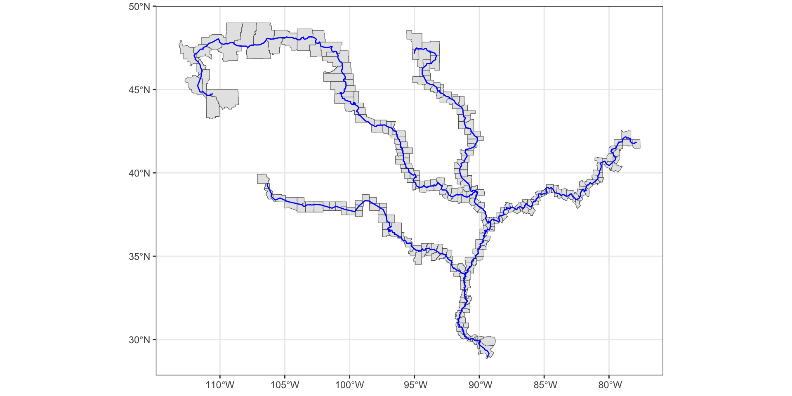
~ Week 4-5: Spatial Data (Raster) 
terra
- The
terrapackage is used for working with raster data. - It provides functions for reading, writing, and manipulating raster data.
library(terra)
gdal()
#> [1] "3.10.1"I/O
- Any raster format that GDAL can read, can be read with
rast(). - The package loads the native GDAL src library (like
sf) rastreads data headers, not data itself, until needed.- Example: Reading a GeoTIF of Colorado elevation.
(elev = terra::rast('data/colorado_elevation.tif'))
#> class : SpatRaster
#> dimensions : 16893, 21395, 1 (nrow, ncol, nlyr)
#> resolution : 30, 30 (x, y)
#> extent : -1146465, -504615, 1566915, 2073705 (xmin, xmax, ymin, ymax)
#> coord. ref. : +proj=aea +lat_0=23 +lon_0=-96 +lat_1=29.5 +lat_2=45.5 +x_0=0 +y_0=0 +datum=NAD83 +units=m +no_defs
#> source : colorado_elevation.tif
#> name : CONUS_dem
#> min value : 98679
#> max value : 439481Raster Structure
Raster data is stored as an multi-dimensional array of values. - Remember this is atomic vector with diminisions - The same way we looked
v <- values(elev)
head(v)
#> CONUS_dem
#> [1,] 242037
#> [2,] 243793
#> [3,] 244464
#> [4,] 244302
#> [5,] 244060
#> [6,] 243888
class(v[,1])
#> [1] "integer"
dim(v)
#> [1] 361425735 1
dim(elev)
#> [1] 16893 21395 1
nrow(elev)
#> [1] 16893Additonal Structure
In addition to the values and diminsions, rasters have: - Extent: The spatial extent of the raster. - Resolution: The spatial resolution of the raster pixels. - CRS: The coordinate reference system of the raster.
crs(elev)
#> [1] "PROJCRS[\"unnamed\",\n BASEGEOGCRS[\"NAD83\",\n DATUM[\"North American Datum 1983\",\n ELLIPSOID[\"GRS 1980\",6378137,298.257222101004,\n LENGTHUNIT[\"metre\",1]]],\n PRIMEM[\"Greenwich\",0,\n ANGLEUNIT[\"degree\",0.0174532925199433]],\n ID[\"EPSG\",4269]],\n CONVERSION[\"Albers Equal Area\",\n METHOD[\"Albers Equal Area\",\n ID[\"EPSG\",9822]],\n PARAMETER[\"Latitude of false origin\",23,\n ANGLEUNIT[\"degree\",0.0174532925199433],\n ID[\"EPSG\",8821]],\n PARAMETER[\"Longitude of false origin\",-96,\n ANGLEUNIT[\"degree\",0.0174532925199433],\n ID[\"EPSG\",8822]],\n PARAMETER[\"Latitude of 1st standard parallel\",29.5,\n ANGLEUNIT[\"degree\",0.0174532925199433],\n ID[\"EPSG\",8823]],\n PARAMETER[\"Latitude of 2nd standard parallel\",45.5,\n ANGLEUNIT[\"degree\",0.0174532925199433],\n ID[\"EPSG\",8824]],\n PARAMETER[\"Easting at false origin\",0,\n LENGTHUNIT[\"metre\",1],\n ID[\"EPSG\",8826]],\n PARAMETER[\"Northing at false origin\",0,\n LENGTHUNIT[\"metre\",1],\n ID[\"EPSG\",8827]]],\n CS[Cartesian,2],\n AXIS[\"easting\",east,\n ORDER[1],\n LENGTHUNIT[\"metre\",1,\n ID[\"EPSG\",9001]]],\n AXIS[\"northing\",north,\n ORDER[2],\n LENGTHUNIT[\"metre\",1,\n ID[\"EPSG\",9001]]]]"
ext(elev)
#> SpatExtent : -1146465, -504615, 1566915, 2073705 (xmin, xmax, ymin, ymax)
res(elev)
#> [1] 30 30Crop/Mask
- The
crop()function is used to crop a raster to a specific extent. - It is useful when you want to work with a subset of the data.
- crop extracts data (whether from a remote or local source)
- The
mask()function is used to mask a raster using a vector or other extent, keeping only the data within the mask. - Input extents must match the CRS of the raster data
- Example: Cropping then masking the elevation raster to Larimer County.
larimer_5070 <- st_transform(larimer, crs(elev))
larimer_elev = crop(elev, larimer_5070)
plot(larimer_elev)larimer_mask <- mask(larimer_elev, larimer_5070)
plot(larimer_mask)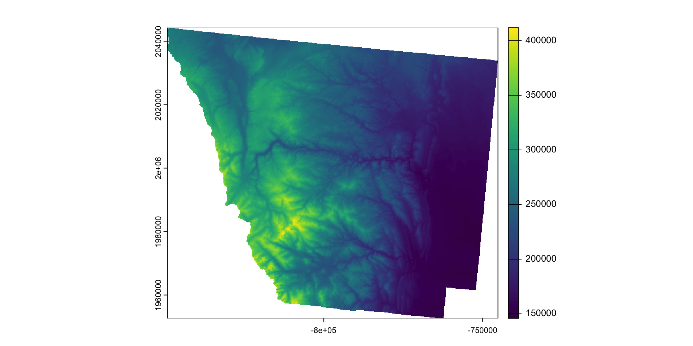
Summary / Algebra
- Rasters can be added, subtracted, multiplied, and divided
- Any form of map algebra can be done with rasters
- For example, multiplying the Larimer mask by 2
raw
larimer_mask
#> class : SpatRaster
#> dimensions : 3054, 3469, 1 (nrow, ncol, nlyr)
#> resolution : 30, 30 (x, y)
#> extent : -849255, -745185, 1952655, 2044275 (xmin, xmax, ymin, ymax)
#> coord. ref. : +proj=aea +lat_0=23 +lon_0=-96 +lat_1=29.5 +lat_2=45.5 +x_0=0 +y_0=0 +datum=NAD83 +units=m +no_defs
#> source(s) : memory
#> varname : colorado_elevation
#> name : CONUS_dem
#> min value : 145787
#> max value : 412773Data Operation
elev2 <- larimer_mask^2rast modified by rast
larimer_mask / elev2
#> class : SpatRaster
#> dimensions : 3054, 3469, 1 (nrow, ncol, nlyr)
#> resolution : 30, 30 (x, y)
#> extent : -849255, -745185, 1952655, 2044275 (xmin, xmax, ymin, ymax)
#> coord. ref. : +proj=aea +lat_0=23 +lon_0=-96 +lat_1=29.5 +lat_2=45.5 +x_0=0 +y_0=0 +datum=NAD83 +units=m +no_defs
#> source(s) : memory
#> varname : colorado_elevation
#> name : CONUS_dem
#> min value : 2.422639e-06
#> max value : 6.859322e-06statistical methods
(scaled = scale(larimer_mask))
#> class : SpatRaster
#> dimensions : 3054, 3469, 1 (nrow, ncol, nlyr)
#> resolution : 30, 30 (x, y)
#> extent : -849255, -745185, 1952655, 2044275 (xmin, xmax, ymin, ymax)
#> coord. ref. : +proj=aea +lat_0=23 +lon_0=-96 +lat_1=29.5 +lat_2=45.5 +x_0=0 +y_0=0 +datum=NAD83 +units=m +no_defs
#> source(s) : memory
#> varname : colorado_elevation
#> name : CONUS_dem
#> min value : -1.562331
#> max value : 3.053412Value Supersetting
- Rasters are matrices or arrays of values, and can be manipulated as such
- For example, setting 35% of the raster to NA
larimer_elev[sample(ncell(larimer_elev), .35*ncell(larimer_elev))] <- NA
plot(larimer_elev)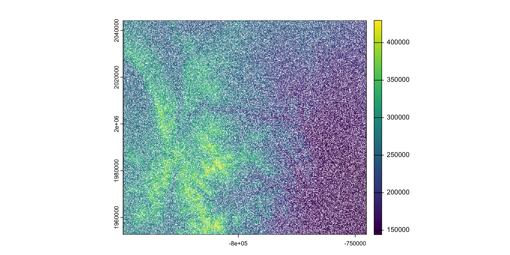
Focal
- The
focal()function is used to calculate focal statistics. - It is useful when you want to calculate statistics for each cell based on its neighbors.
- Example: Calculating the mean elevation within a 30-cell window to remove the NAs we just created
xx = terra::focal(larimer_elev, win = 30, fun = "mean", na.policy="only")
plot(xx)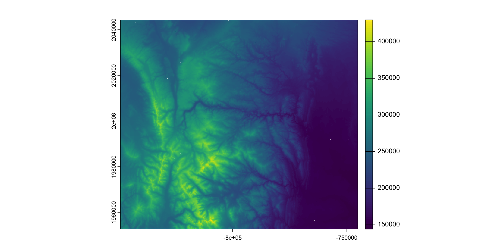
~ Week 6-7: Machine Learning 
library(tidymodels)
tidymodels_packages()
#> [1] "broom" "cli" "conflicted" "dials" "dplyr"
#> [6] "ggplot2" "hardhat" "infer" "modeldata" "parsnip"
#> [11] "purrr" "recipes" "rlang" "rsample" "rstudioapi"
#> [16] "tibble" "tidyr" "tune" "workflows" "workflowsets"
#> [21] "yardstick" "tidymodels"Seeds for reproducability
rsamples for resampling and cross-validation
- The
rsamplepackage is used for resampling and cross-validation. - It provides functions for creating resamples and cross-validation folds.
- Example: Creating a 5-fold cross-validation object for the
penguinsdataset.
set.seed(123)
(penguins_split <- initial_split(drop_na(penguins), prop = 0.8, strata = species))
#> <Training/Testing/Total>
#> <265/68/333>
penguins_train <- training(penguins_split)
penguins_test <- testing(penguins_split)
penguin_folds <- vfold_cv(penguins_train, v = 5)recipes for feature engineering 
- The
recipespackage is used for feature engineering. - It provides functions for preprocessing data before modeling.
- Example: Defining a recipe for feature engineering the
penguinsdataset.
# Define recipe for feature engineering
penguin_recipe <- recipe(species ~ ., data = penguins_train) |>
step_impute_knn(all_predictors()) |> # Impute missing values
step_normalize(all_numeric_predictors()) # Normalize numeric featuresParsnip for model selection 
- The
parsnippackage is used for model implementation - It provides functions for defining models types, engines, and modes.
- Example: Defining models for logistic regression, random forest, and decision tree.
# Define models
log_reg_model <- multinom_reg() |>
set_engine("nnet") |>
set_mode("classification")
rf_model <- rand_forest(trees = 500) |>
set_engine("ranger") |>
set_mode("classification")
dt_model <- decision_tree() |>
set_mode("classification")Workflows for model execution 
- The
workflowspackage is used for model execution. - It provides functions for defining and executing workflows.
- Example: Creating a workflow for logistic regression.
# Create workflow
log_reg_workflow <- workflow() |>
add_model(log_reg_model) |>
add_recipe(penguin_recipe) |>
fit_resamples(resamples = penguin_folds,
metrics = metric_set(roc_auc, accuracy))yardstick for model evaluation 
collect_metrics(log_reg_workflow)
#> # A tibble: 2 × 6
#> .metric .estimator mean n std_err .config
#> <chr> <chr> <dbl> <int> <dbl> <chr>
#> 1 accuracy multiclass 1 5 0 Preprocessor1_Model1
#> 2 roc_auc hand_till 1 5 0 Preprocessor1_Model1workflowsets for model comparison
- The
workflowsetspackage is used for model comparison. - It provides functions for comparing multiple models usingthe purrr mapping paradigm
- Example: Comparing logistic regression, random forest, and decision tree models.
(workflowset <- workflow_set(list(penguin_recipe),
list(log_reg_model, rf_model, dt_model)) |>
workflow_map("fit_resamples",
resamples = penguin_folds,
metrics = metric_set(roc_auc, accuracy)))
#> # A workflow set/tibble: 3 × 4
#> wflow_id info option result
#> <chr> <list> <list> <list>
#> 1 recipe_multinom_reg <tibble [1 × 4]> <opts[2]> <rsmp[+]>
#> 2 recipe_rand_forest <tibble [1 × 4]> <opts[2]> <rsmp[+]>
#> 3 recipe_decision_tree <tibble [1 × 4]> <opts[2]> <rsmp[+]>autoplot / rank_results
- The
autoplot()function is used to visualize model performance. - The
rank_results()function is used to rank models based on a metric. - Example: Visualizing and ranking the model results based on the roc_auc (area under the curve) metric.
autoplot(workflowset)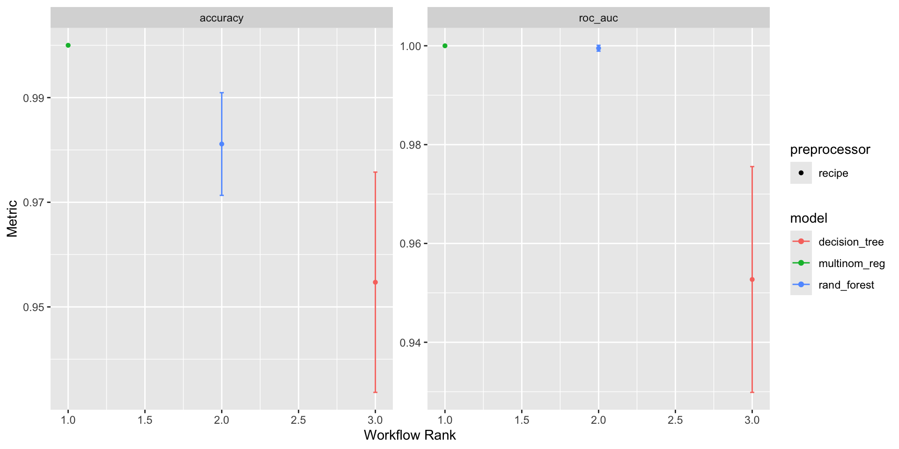
rank_results(workflowset, rank_metric = "roc_auc")
#> # A tibble: 6 × 9
#> wflow_id .config .metric mean std_err n preprocessor model rank
#> <chr> <chr> <chr> <dbl> <dbl> <int> <chr> <chr> <int>
#> 1 recipe_multinom_… Prepro… accura… 1 0 5 recipe mult… 1
#> 2 recipe_multinom_… Prepro… roc_auc 1 0 5 recipe mult… 1
#> 3 recipe_rand_fore… Prepro… accura… 0.981 5.97e-3 5 recipe rand… 2
#> 4 recipe_rand_fore… Prepro… roc_auc 1.00 3.60e-4 5 recipe rand… 2
#> 5 recipe_decision_… Prepro… accura… 0.955 1.28e-2 5 recipe deci… 3
#> 6 recipe_decision_… Prepro… roc_auc 0.953 1.39e-2 5 recipe deci… 3Model Validation
- Finally, we can validate the model on the test set
- The
augment()function is used to add model predictions and residuals to the dataset. - The
conf_mat()function is used to create a confusion matrix. - Example: Validating the logistic regression model on the test set.
workflow() |>
# Add model and recipe
add_model(log_reg_model) |>
add_recipe(penguin_recipe) |>
# Train model
fit(data = penguins_train) |>
# Fit trained model to test set
fit(data = penguins_test) |>
# Extract Predictions
augment(penguins_test) |>
conf_mat(truth = species, estimate = .pred_class)
#> Truth
#> Prediction Adelie Chinstrap Gentoo
#> Adelie 30 0 0
#> Chinstrap 0 14 0
#> Gentoo 0 0 24Conclusion
- Today we reviewed/introduced the foundations of R for environmental data science.
- We discussed data types, structures, and packages for data manipulation and modeling.
- We also explored vector and raster data, along with ML applications.
- We will continue to build on these concepts in future lectures.
- Please complete the survey to help us tailor the course to your needs.